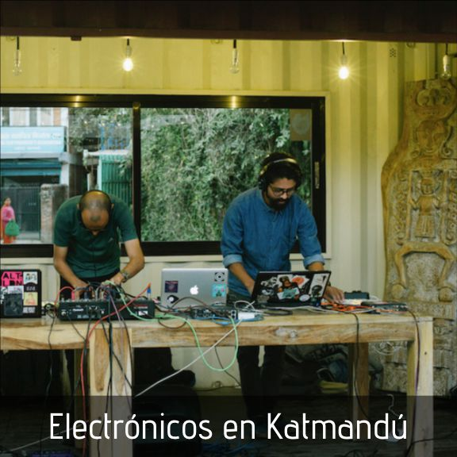

Nepal siempre ha cautivado la imaginación. Ubicado entre dos superpotencias: India y China, y ubicado en la cima del Himalaya, la cordillera más alta del mundo, el país tiene más de 2.000 años de historia y cultura. Nepal también se ha convertido en un destino para quienes buscan una experiencia cultural única. Como tal, la ciudad capital de Katmandú, el punto de acceso total para el país, cuenta con un paisaje musical notable: una vibrante incubadora no solo de DJs y productores, sino también de un grupo acogedor de personas, ansiosos por formar una comunidad."He visto mucho interés de India y Pakistán aquí, probablemente porque somos un país pacífico", dice por teléfono el productor nepalés phatcowlee. Con crecientes tensiones en otras partes del sur de Asia, especialmente entre Pakistán e India, Nepal se ha convertido en un centro para que los artistas se congreguen. "Puedo invitar a un paquistaní [y] a un indio aquí y todos pueden actuar", dice Rishi Jha, cofundador de la agencia cultural We All should Play. "Si un indio quiere ir a Pakistán, es imposible. Si un paquistaní quiere ir a la India, es imposible. Aquí, celebramos ser del sur de Asia "."La versión más reciente [de la escena] comienza en el advenimiento del milenio", dice Ranzen Jha, el padrino no oficial de la escena de música electrónica nepalí. “Los rituales semanales de los martes en el Club Galaxy [donde] aparecieron DJs como Ankytrixx, Kranti y Nishan, fueron los primeros bailes en Katmandú. Más tarde, Funky Buddha comenzó como un lugar de referencia para la música psytrance ".Pronto, la escena brotó retoños. Party Nepal, una empresa de eventos, proporcionó el primer sitio web para los próximos listados de eventos. La música electrónica llegó a la televisión y, liderada por algunos medios de música en Katmandú, principalmente en la zona turística de Thamel, se desarrolló un nuevo tipo de estilo de vida. Las generaciones más jóvenes comenzaron a gravitar hacia la música house, techno y bass, y se desarrolló una cultura de bricolaje distintiva: festivales como Shanti Jantra, Universal Religion, Moodelila, Dark Sun, Ambient Valley y Dancemandu se llevaron a cabo entre 2007 y 2014.s usar alternativas, los combustibles fósiles son irremplazables.
Desde los viajes de los apostadores y artistas de gira, hasta el consumo de plástico en clubes nocturnos y festivales, hasta la producción de equipos y música física, es justo decir que la industria de la música no es la más ecológica. Un informe de Powerful Thinking en 2016, por ejemplo, mostró que solo los festivales de música británicos producen 23,500 toneladas de desechos, usan cinco millones de litros de combustible y tienen emisiones de CO2 de casi 20,000 toneladas cada año, y los festivales solo han crecido en número y tamaño. Desde entonces, aquellos en la industria no son conscientes de su huella, y constantemente se están haciendo cambios para mejorar. Contando a A-Trak, Jamie Jones, Lauren Flax, Louisahhhh y Soul Clap entre sus embajadores, la organización DJs For Climate Action alienta a los artistas a usar su arte y su influencia cultural para provocar respuestas y crear conciencia sobre el cambio climático. Este año, los clubes de Londres, The Pickle Factory y Oval Space, se convirtieron en los primeros en la capital en ser 100% libres de plástico, desechando todas las botellas, tazas e incluso pulseras no reciclables, en favor de alternativas ecológicas. Y los promotores de eventos internacionales Live Nation también prometieron que cinco de los festivales más grandes del Reino Unido (Download, Latitude, Leeds, Reading e Wireless) estarán libres de plástico para 2021. Sin embargo, un brazo de la industria que a menudo se pasa por alto en términos de impacto ambiental, es la fabricación y distribución de lanzamientos en formatos físicos. Se vendieron 4,2 millones de álbumes de vinilo solo en el Reino Unido en 2018, un aumento del 1,6%, o 100.000 ventas adicionales, a partir de 2017. También se vendieron 35.000 cintas de casete en el período de seis meses a principios de 2019, que es casi el doble los 18,000 que se vendieron entre enero y junio de 2018. El aumento en las ventas significa un aumento en la producción, y la producción de ambos formatos físicos es un proceso en gran medida perjudicial. Cuando se trata específicamente de la producción de vinilo, cada etapa de la meticulosa El proceso es dañino. El combustible fósil, el petróleo crudo, se extrae de fuentes limitadas en el suelo, se refina y procesa en granulado de PVC, el material del que está hecho su vinilo estándar. El color negro típico del vinilo se deriva del negro de carbón, un subproducto de la quema de sustancias de petróleo como el alquitrán. Los estudios de profesores y otros profesionales calificados estiman que tenemos alrededor de 50 años hasta que se agoten todas las fuentes de combustibles fósiles, y aunque podemos usar alternativas, los combustibles fósiles son irremplazables.
Su single "Watermelon Woman" de su disco Technicolor recorre una deliciosamente psicodélica ruta disco. "Creo que estaba obsesionada con la música de Bufiman, también Golden Teacher, y durante todo un año he querido hacer algunas pistas de baile psicodélico de medio tiempo, pero realmente no sabía cómo. Un día simplemente me senté y probé un redoble de batería, y se convirtió en esto en unas horas al girar los mandos del Minilogue ”. Es el sintetizador Korg y el Prólogo antes mencionados que usa con frecuencia, y cree que constantemente descubre nuevos sonidos y géneros. es cómo el estilo de la música que está haciendo cambia constantemente. "Mi narrativa es un reflejo de mi curva de aprendizaje", explica Yu Su. Con la naturaleza ecléctica de su sonido, es uno que la está llevando lejos, con reservas de DJ en Polonia, Albania, Amsterdam, Francia y Londres este verano, más recientemente jugando NYC y LA, y Australia este mes. Para su actuación en Giant Steps en Londres, amalgamó dos de sus pasatiempos favoritos: la música y la cocina. "Se sintió como el concierto más especial que he hecho, hay algo muy extraño con alimentar a las personas", dice ella. "Me encanta cocinar, y estoy planeando organizar más eventos que involucren comida". En este momento, ella se está centrando en un álbum, con algunos remixes por venir mientras tanto. También está trabajando en la co-puntuación de un documental para un artista multidisciplinario en Vancouver, que mostrará otro lado de su dominio de la producción.ll show yet another side to her production mastery.